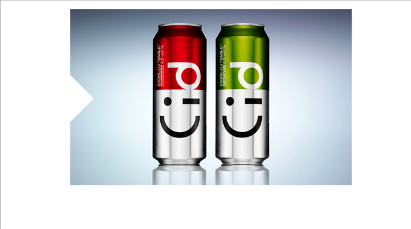
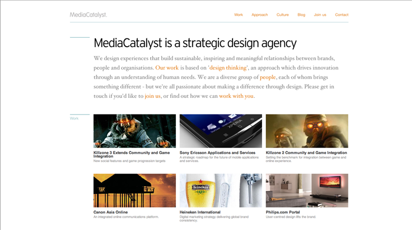
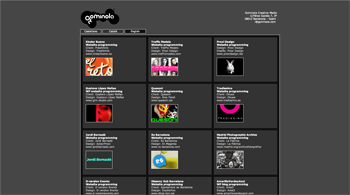
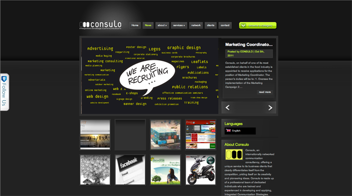
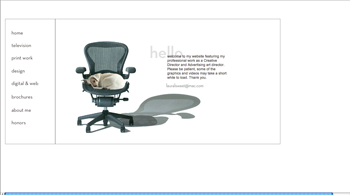
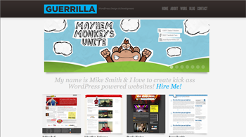
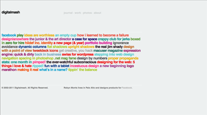
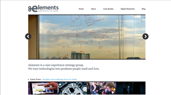
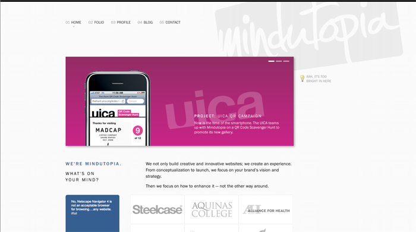
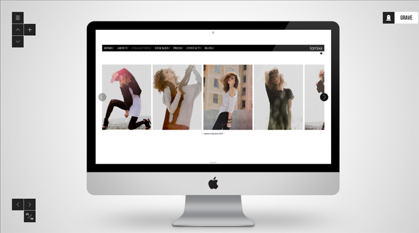

Neema Mahdavi
Portfolio Analysis
| Brand | Swedish - The site gives the Swedish design feel, the same as IKEA.
Crisp, clean design. Minimal - The site is very, very basic. It only has an image, as simple as you can get. Futuristic - I get a "futuristic" vibe from the site because it is different and abnormal from the usual layout. |
| Functionality | If the function of the site was to show a set number of slides - it does its job. The site only shows a few design examples and ends with the email of the designer. There is nothing else on the site -- only images. There is no text on the site describing the images. |
| Interaction | The side of the site has a white arrow that blends into the background. Clicking it navigates through the slides, then repeating when you have come to the end of the slides. This is the only interactive part of the site. Like I said before, there is nothing on the site. |
| Navigation | Navigation on this site is pretty bad. There are no words on this page at all, the user is always forced to go forwards for 13 "pages" before it cycles to the beginning again. |
| Image |  |
| Brand | Friendly - they try to describe everything to the user and want to build
relationships and use friendlier words.
Professional - They are a corporation and a business. Simple - They don't use a lot of colors, and all the colors are slightly desaturated, so it feels like they concentrate on minimal and clean design. |
| Functionality | Their site seems pretty functional. They have everything laid out in a way where you can find everything you need. They have a place to go see samples of their work, a section on contacting them, and a blog. They cover all the fundamental functions they need. |
| Interaction | As far as interaction, the site requires the user to do everything. There is no automation. The site is entirely click-only. Although, when the user is viewing the work section on the home page, it highlights the text the mouse is hovering over and dims the other texts |
| Navigation | There is a navigation bar up on the top of the page, and clicking each one takes you exactly there. The pages are also named after their navigation bar name i.e. Work takes you to "Our Work." The navigation bar never changes so the user may always go back. |
| Image |  |
| Brand |
This probably wasn't their intent, but I also thought the site was bland, so that's part of their identity - Bland. |
| Functionality | Cool |
| Interaction | Cool |
| Navigation | Cool |
| Image |  |
| Brand | Cool |
| Functionality | Cool |
| Interaction | Cool |
| Navigation | Cool |
| Image |  |
| Brand | Artistic - Experienced - |
| Functionality | Cool |
| Interaction | Cool |
| Navigation | Cool |
| Image |  |
| Brand | Friendly- The testimonials on his site give insight to his
character which is perceived to be friendly and helpful. Informal - but still a little professional. By using really informal language, such as "kickass" he retains his friendliness as well. Dedication - He has made clear his design and development is for only one platform, Wordpress. This shows dedication and commitment to that technology. |
| Functionality | The site shows the examples of his work right next to his testimonials and also has examples of his work all over without having to navigate elsewhere. This way he gets to advertise his work immediately and sell the visitor to his work. Gets the job done quickly, and if the user wants to see more, they can navigate to more examples of his work pretty easily. |
| Interaction | There is a showcase box on the central box of the page with animations that scroll through his design work, but the user may also use the arrows to control the rate of change and navigate through examples themselves. |
| Navigation | Pretty easy |
| Image |  |
| Brand | Creative - The site is coded differently and creatively,
which is refreshing. The main navigation through the site
is all text based and only the articles have images. New - Again, being creative with the coding brings a new view on the site, one that isn't very common giving a new-feeling personality for the site. Fun - The navigation and links are labeled very uncommonly, like "the real jim shady," playing on pop culture and giving it a different feel from other websites. |
| Functionality | It's a portfolio site, so it accomplishes its task of displaying the creative work. The site is completely minimal and only shows images when it needs to. It's a cool site, but maybe he should have shown more images since he is a graphic artist and that is what he wants to advertise. |
| Interaction | Even though this is a portfolio of a graphic designer, the interaction on the site is really cool. By running the cursor over the links, each one highlights a different color. Clicking a link opens the article underneath, without taking you to a new page, making navigation easier. |
| Navigation | Pretty simple. Clicking a link opens it in the same page so you can scroll back up to go to where you where. To go another page, you can just use the navbar, which takes you to a page that is titled with the exact page you're on, making navigation easy. |
| Image |  |
| Brand | Cool |
| Functionality | Cool |
| Interaction | Cool |
| Navigation | Cool |
| Image |  |
| Brand | Cool - Even though they are a business, they are really
casual and cool about the way they conduct their business. Fresh - Throughout the site, they're talking about how they 'not only' do some things, they also enhance, so they're bringing more to the table than others. Professional - They are a business and they have this vibe about their page which gives it a professional feel. |
| Functionality | Cool |
| Interaction | They have a pretty fun feature on their site. There is a button that says "Ahh it's too bright" and clicking it changes the background to black. When it's black the icon changes to "Do you guys want the lights on?" They also have a showcase in the central box that uses javascript and a timer to switch the slides showcasing their products and solutions. |
| Navigation | There is a clear navigation bar that's consistent throughout the entire site. No matter where you are, either the header will tell you are, or a little gif image underneath the navbar will tell you which page you're on. |
| Image |  |
| Brand | Cool -
Hip - Edgy - |
| Functionality | Cool |
| Interaction | Fun |
| Navigation | Cool |
| Image |  |